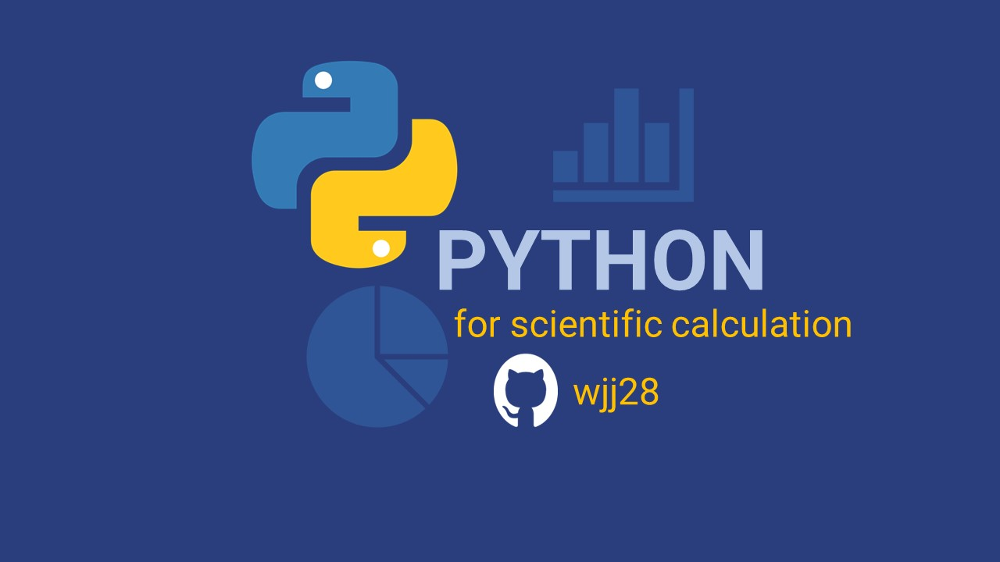

After I have completed my Master's, I realized I
could definitely share some of the acquired knowledge about Data Science,
Data Manipulation and Data Visualization

Oct 17th . 3 min read
Python for Scientific Calculation
From Zero: Python installation
Let’s get to know a bit more about Python🐍
and how to use it! 😁👊🏾
Oct 17th . 3 min read
Python for Scientific Calculation II
Jupyter Notebook Installation via Anaconda
In the previous article, we learned how to
install Python🐍 in our machines. But the...
Oct 19th . 4 min read
Python for Scientific Calculation III
Python Basics: Datatypes
In the previous articles, we learned not just how
to install Python🐍 and Jupyter Notebook
Oct 20th . 5 min read
Python for Scientific Calculation IV
Python Basics: Operators
Now we know what Data types are; in case you don’t,
no worries, my previous article can be of help.
Oct 26 · 4 min read
LaTeX with Jupyter Notebook
Add LaTeX to your Jupyter NB
Today’s post is focused on the research tool
most academics use to structure their technical and scientific documentation: LaTeX